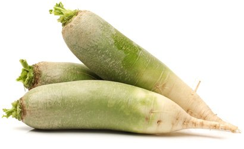
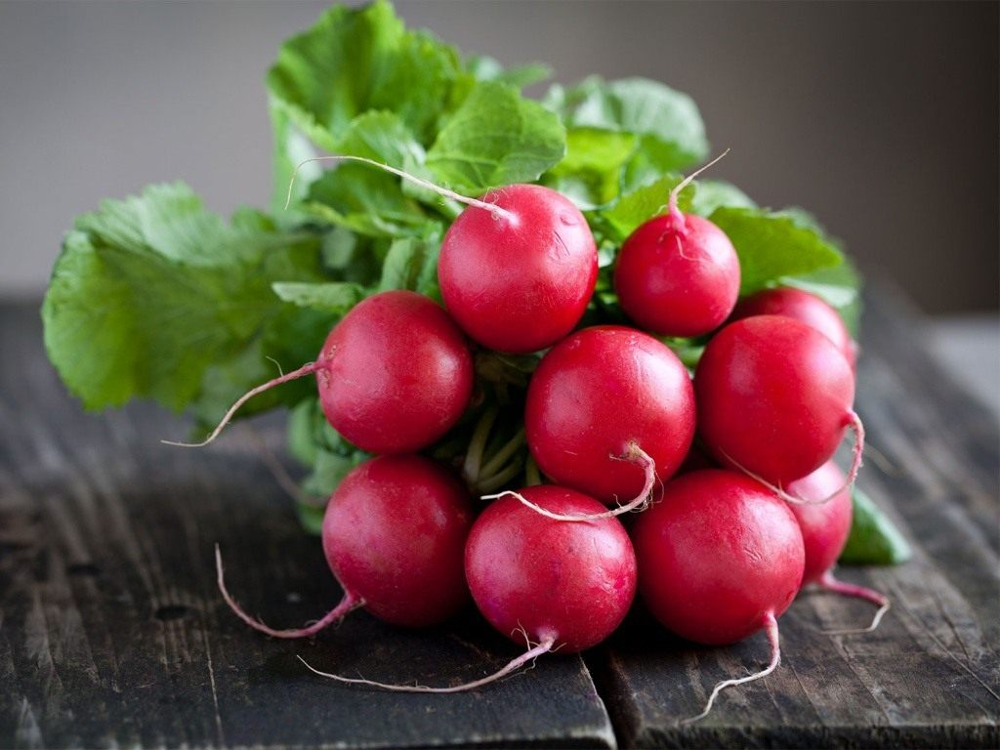

Морковь посевная — двулетнее растение, овощная культура, подвид вида морковь дикая. Обычно в быту под словом «морковь» подразумевается широко распространенный корнеплод именно этого растения, который обычно относят к овощам.
Кукуруза сахарная — однолетнее травянистое культурное растение, единственный культурный представитель рода Кукуруза семейства Злаки.
 Огурец — самый низкокалорийный и водянистый из овощей, ведь он на 96% состоит из воды.
Огурец — самый низкокалорийный и водянистый из овощей, ведь он на 96% состоит из воды.
Чесно́к (лат. Állium satívum) — многолетнее травянистое растение; вид рода Лук семейства Амариллисовые (Amaryllidaceae) подсемейства Луковые (Allioideae), ранее помещался в самостоятельное ныне упразднённое семейство Луковые (Alliaceae).
Лук репчатый - это трехлетнее травянистое растение высотой до 900 см из семейства луковых. Его родина - Юго-Западная Азия. ... В кулинарии лук репчатый применяют практически во всех блюдах, за исключением напитков и кондитерских изделий.
Помидоры, они же — томаты, — сочные плоды, как правило имеющие красный цвет и круглую форму. ... Это большие плоды, достигающие порой 15 сантиметров в диаметре. Плотные, мясистые и очень красивые. Замечательно подойдут для бургеров, сэндвичей и пиццы — везде, где нужны красивые большие тоненькие кружочки томатов.

Редька — небольшой род одно- и многолетних травянистых растений семейства Капустные (Brassicaceae). В диком виде произрастает в Европе и умеренном поясе Азии. Редька посевная (Raphanus sativus) в диком виде не встречается.
Хрен - многолетнее травянистое растение рода Хрен семейства Капустные. Стебель прямой, высотой от 50 до 150 см, листья зеленые, крупные, продолговато овальные.

Редис — съедобное растение и выращивается как овощ во многих странах мира. Его название происходит от лат. radix — корень.
Свёкла обыкнове́нная (лат. Béta vulgáris) — однолетнее, двулетнее или многолетнее травянистое растение; вид рода Свёкла семейства Амарантовые (ранее род относился к семейству Маревые). Культивируется на больших площадях повсеместно.
Морковь посевная — двулетнее растение, овощная культура, подвид вида морковь дикая. Обычно в быту под словом «морковь» подразумевается широко распространенный корнеплод именно этого растения, который обычно относят к овощам.
Кукуруза сахарная — однолетнее травянистое культурное растение, единственный культурный представитель рода Кукуруза семейства Злаки.
Огурец — самый низкокалорийный и водянистый из овощей, ведь он на 96% состоит из воды.
Чесно́к (лат. Állium satívum) — многолетнее травянистое растение; вид рода Лук семейства Амариллисовые (Amaryllidaceae) подсемейства Луковые (Allioideae), ранее помещался в самостоятельное ныне упразднённое семейство Луковые (Alliaceae).
Лук репчатый - это трехлетнее травянистое растение высотой до 900 см из семейства луковых. Его родина - Юго-Западная Азия. ... В кулинарии лук репчатый применяют практически во всех блюдах, за исключением напитков и кондитерских изделий.
Помидоры, они же — томаты, — сочные плоды, как правило имеющие красный цвет и круглую форму. ... Это большие плоды, достигающие порой 15 сантиметров в диаметре. Плотные, мясистые и очень красивые. Замечательно подойдут для бургеров, сэндвичей и пиццы — везде, где нужны красивые большие тоненькие кружочки томатов.
Редька — небольшой род одно- и многолетних травянистых растений семейства Капустные (Brassicaceae). В диком виде произрастает в Европе и умеренном поясе Азии. Редька посевная (Raphanus sativus) в диком виде не встречается.